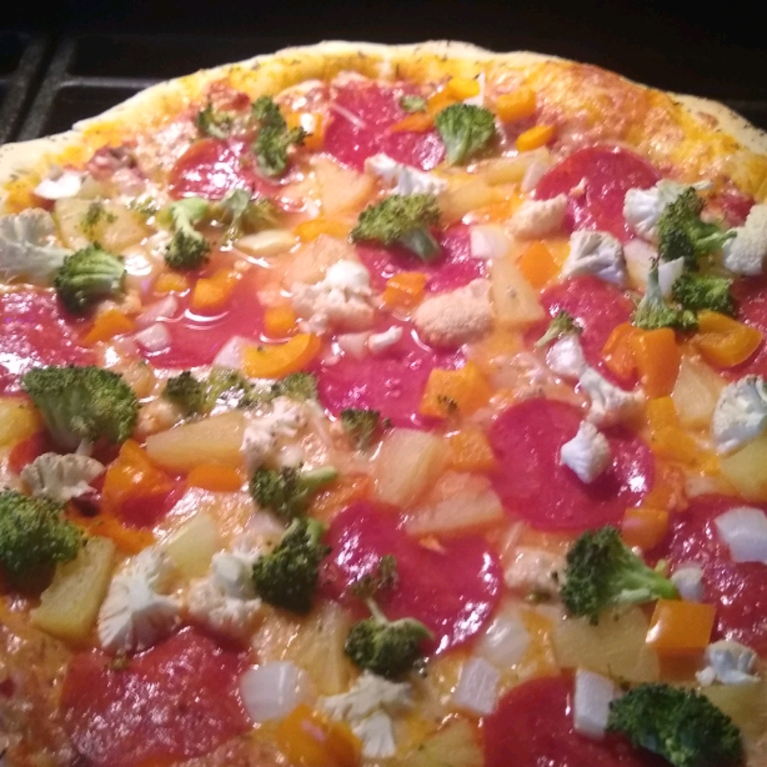

Valentino's Pizza Crust
This is an excellent pizza crust recipe. I have found it is really good when baked on a pizza stone.

ingredients:
- 1 cup warm water (110 degrees F/45 degrees C)
- 1 tablespoon white sugar
- 2¼ teaspoons active dry yeast
- 3 tablespoons olive oil
- 1 teaspoon salt
- 2½ cups all-purpose flour
Directions:
- Stir water, sugar and yeast together until dissolved.
Add the olive oil and the salt. Stir in the flour until well blended.
Let dough rest for 10 minutes.
- Pat dough into pan or on to a pizza stone using fingers dipped in olive oil.
If desired sprinkle basil, thyme or other seasonings on crust.
Top with your favorite pizza toppings and bake
for 15 to 20 minutes in a preheated 425 degree oven..